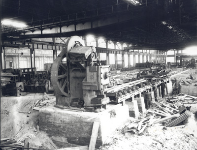
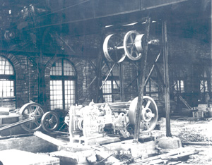
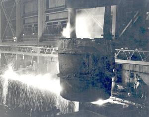
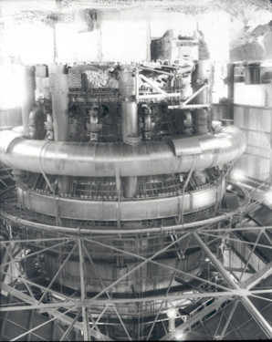
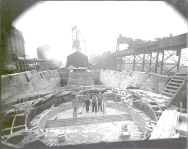
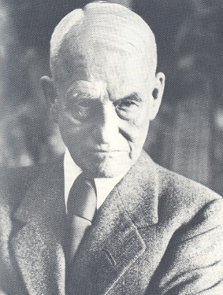
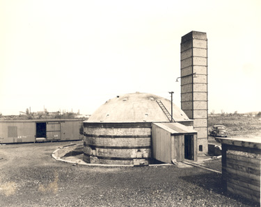
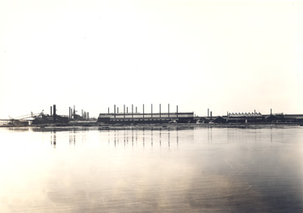
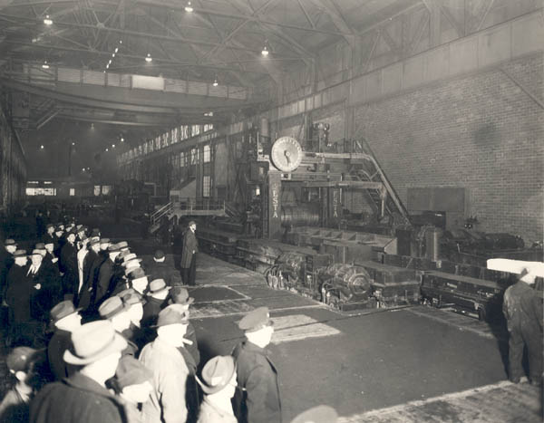

Home • Hydroelectric Power • Pulp & Paper • Transportation • Mining • Forestry • Algoma Steel • Algoma Tubes
The Algoma Steel Company Limited
Algoma Steel Company Limited was incorporated by means of Letters Patent issued 10 May 1901, the largest project undertaken by the Lake Superior Power Company up to that time. The mandate of the Company was to manufacture and to deal in iron, steel, nickel, charcoal, timber, etc. The by-laws of the company also allowed it to build bridges, railway equipment and ships, to own and operate mines and to acquire and own shares in other companies. The Company, which was authorized to issue capital stock in the amount of $20,000,000 was financed through the sale of preferred shares in the Company on the New York and Philadelphia markets.
Francis H. Clergue had long anticipated the construction of a steel manufacturing plant. In keeping with his theory that there should be no wastage, that all products and by-products of one Company should be useful to that Company or to another of the subsidiary Companies in addition to broader outside markets, a steel plant would be an ideal project: it would create a market for the sale of the ores from the iron ore mines at Michipicoten and the nickel mine at Sudbury, it would create a market for the charcoal and products from other subsidiaries (particularly the Power Company), it would ensure business for the railroad and it would generate new money through the sale of steel to outside buyers. The fact that the Dominion Government paid a bounty of $3 per ton for the production of steel in Canada constituted an added incentive to develop a steel mill.
 Merchant Mill, 1910 |
 Spike Bolt Nut Shop, 1910 |
The meeting of the first directors of the Steel Company was held in Philadelphia on 20 May 1901. The meeting was a mere formality, enabling the Company to proceed with a meeting of the shareholders and the election of a managing Board of Directors. The shareholders held their first meeting on 3 June 1901 at which time they nominated Francis H. Clergue, Ernest V. Clergue, Edward V. Douglas, Walter P. Douglas, Frank S. Lewis, Henry C. Hamilton and John S. Freeman as directors. When the directors subsequently met on 8 June 1901, they elected Francis H. Clergue as the President, Edward V. Douglas as the Vice-President, Walter P. Douglas as Secretary and Assistant Treasurer, Frank S. Lewis as Treasurer and Assistant Secretary and Henry C. Hamilton as Assistant Secretary. The Board executed its first loan in October of 1901 when it borrowed $1 million from the Commercial Trust Company of New York.
Once the organizational structure of the Company was in place, construction of the physical plant began. In anticipation of the finalization of the organization, much of the equipment required to produce steel had been ordered – some of it as early as October, 1900. The year 1901 was a busy one for the Company. A Bessemer plant and a blooming mill were installed, four furnaces to smelt the ore (two fuelled by charcoal and two fuelled by coke) were in the final planning stages and ore docks were constructed to receive the iron ore that was shipped from Michipicoten. The docks were state of the art, measuring 2,250 feet in length and equipped with the most modern loading and unloading features. An area adjacent to the docks was set aside for the storage of raw materials including iron ore, lime and coal.
The steel plant began producing steel in 1902. The Bessemer plant was fired in February of 1902 and the first ingot was cast on 18 February 1902. Falling close on the heels of the Bessemer plant, the blooming mill started in April. The rail mill was completed in early 1902 with the capacity to produce 1,000 tons of rails per day; the first rails were rolled on May 5th. Algoma Steel gained the distinction of producing the first steel in Ontario and rolling the first rails in Canada. The plant experienced growing pains but continued to operate throughout the summer and fall of 1902. It was forced to close in December, however, due to a lack of orders. It has variously been reported that the lack of orders stemmed from competition from seasoned American and German steel producers and that the steel was of inferior quality. Whatever the reason, Algoma Steel produced only 44,586 tons of ingots and 36,500 tons of rails during 1902.
Ever the promoter, Clergue secured a contract from the Dominion Government for the delivery of 125,000 tons of rails to be delivered in five equal increments of 25,000 tons commencing in August, 1901. The contract was solidly attacked in parliament on two grounds: the price the government agreed to pay for the rails exceeded the price paid to offshore manufacturers and the questionability of the capacity of Algoma Steel and Clergue to deliver the rails pursuant to the terms of the contract. Needless to say, no rails were delivered in 1901 given the fact that the rail mill was not yet operational. Despite this failure to produce, the Government did not cancel the contract with Algoma Steel. Algoma only partially fulfilled its contractual obligations to the Dominion Government in 1902 due to a lack of rails but this did not deter the Company from accepting additional orders from Mackenzie, Mann and Company and the Michigan Central Railroad. At the same meeting at which the Board of Directors approved the acceptance of these additional contracts, they also appointed Drummond and McCall, a Montreal firm, as exclusive selling agents in Canada for steel rails in Canada. It was agreed between the parties that the contract would continue for a five-year period and that Drummond and McCall would be paid a commission in the amount of 1% on the invoiced price of all goods sold. No rails were produced in 1903 resulting in the loss of available outside contracts but not in the loss of the existing contract with the Dominion Government.
Open Hearth Furnace, 1941 |
 Open Hearth Furnace, 1952 |

Clergue argued that the lack of orders was directly attributable to the absence of tariff protection for steel producers in Canada. He specifically complained that the Dominion Government failed to protect Canadian–made rails. He pointed out that Sir Wilfred Laurier, then Prime Minister of Canada, had verbally assured him that a protective duty would be imposed once it was demonstratively proved that the rails rolled in Canada met world-wide industry standards. Unfortunately for Algoma Steel and especially for Clergue, Parliament did not pass legislation respecting the imposition of a tariff until the end of 1903 and ratified by Order in Council until 1904. By that time Clergue's industrial complex in Sault Ste. Marie had collapsed and the Algoma Steel Company had been closed for several months. In 11904 the Allied Companies of the Consolidated Lake Superior Company, which included the Algoma Steel Company, were reorganized under a new parent company, the Lake Superior Corporation. In August, the steel plant was once agin in operation and rail orders were flowing in. The shortage of working capital which had plagued expansion programs was eased in 1908 when the English had interests headed by Robert Flemming, and English financier, gained control over the Lake Superior corporation. The new financing had an immediate effect on the Algoma Steel Compan with the construction in 1909 of the No. 3 blast furnace, by-product coke ovens, a third open hearth furnace and new docks commenced.
 Blast Furnace, 1952 |
 Site of Blast Furnace #3, 1910 |
By February of 1902 the Directors recognized the signs of impending financial disaster and they attempted to place controls on spending. The first step they took was to pass a motion to the effect that only officers properly authorized by the Company would henceforth be allowed to execute promissory notes in the name of the Company. When this proved unsuccessful, the directors hired a comptroller, J. Sterling Wynn, to manage the finances of the Company. He was assisted by W.K. Stager who was hired as Assistant Treasurer, a position separate and apart from the Board position of Assistant Treasurer. Unfortunately, they didn’t take financial controls one step further and eliminate the practice of selling shares on an installment plan basis. By selling shares in this manner, expenditures more often than not exceeded receipts forcing the Company to rely upon loans for operating funds.
Wynn and Stager took their mandate seriously. But, no sooner had they succeeded in paying down a portion of the loan from Commercial Trust than the Board of Directors voted in favour of obtaining another loan in the amount of $500,000 so as to allow for capital expenditures such as a crane for the soaking pit. The concept of fiscal responsibility eluded the Board.
The loan to Algoma Steel came from Speyer and Company of New York. Before advancing the funds, Speyer required certain conditions to be met. First, they required that all bonds and shares of the Company be transferred to Speyer. Second, they required that Algoma, like all other Allied Companies, allow Speyer to replace members of the Board with their own appointees. Edward Douglas, Walter Douglas and Frank Lewis all resigned as directors in January, 1903. Clergue remained as a member of the Board and as General Manager of the steel works until Speyer requested his resignation on 3 April 1903.
Clergue’s active particpation in the development of the Algoma Steel Company Limited ended with his forced resignation from the Board. He encouraged several of his strongest supporters to participate in the Reorganization Committee formed for the purpose of salvaging the Allied Companies following their collapse in September of 1903. Clergue, himself, became involved in the reorganization process when he and certain members of the Reorganization Committee formed the Canadian Improvement Company Limited. The twin purposes of this company were to underwrite the bonds of the newly created parent company, the Lake Superior Corporation of New Jersey, and to assist this parent company in its negotiations with the Provincial Government. Thanks in large part to the skills and knowledge of Clergue and his long-time Sault Ste. Marie associate, Henry C. Hamilton, the Ontario Government guaranteed a loan in the amount of $2,000,000 to the Lake Superior Corporation.
The Directors of the Consolidated Lake Superior Company held their final meeting on 23 May 1904, just days after the inaugural meeting of the Lake Superior Corporation. The final act of the Directors at this meeting was the ratification of the agreements transferring management and control of the various subsidiary industries, including Algoma Steel, to the Lake Superior Corporation. Clergue stayed in touch with the development of the fledgling steel industry at Sault Ste. Marie through his election to the Board of Directors of the Lake Superior Corporation. He remained a member of the board until 1907 when he failed to be reelected by the shareholders at their annual meeting. His direct link with the steel company was severed and did not resurface until sometime later when he successfully introduced James Dunn (later Sir James Dunn) and British financier Robert Fleming to the local steel industry.
In 1912 it was decided to consolidate some of the Lake Superior Corporation's remaining companies into a new company. In July 1912 the assets of the Algoma Steel Company, the Lake Superior Power Company, the Algoma Commercial Company, the Algoma Iron Works and the Lake Superior Iron and Steel Company combined to form the Algoma Steel Corporation. At the same time the stock of the Fiborn Limestone company and the Cannelton Coal Company was assigned to the Algoma Steel Corporation and they became wholly owned subsidaries of Algoma Steel.
The outbreak of war in Eurpoe in 1913 at first was the cause of financial difficulties for the new company as orders for rails were cancelled. However, as the war progressed and the demand for steel munitions increased, the company prospered. As the war ended the years of financial prosperity left the Algoma Steel Corporation in sound financial condition, with large cash reserves and most of it's debts paid off. The steel company would continue to prosper until the financial conditions of the depression brought it into receivership in 1932. It was at this time that Sir James Dunn, who had long been a silent partner in Algoma Steel, took steps to gain control of the company. In 1934 Sir James Dunn reorganized the steel company by incorporating a new company, the Algoma Steel Corporation (1934). Sir James Dunn would continue to mould Algoma Steel until his death in 1956.
 Sir James Dunn |
 Brick Plant, Algoma Steel, 1938 |
 Algoma Steel, 1937 |
 Blooming Mill, Open Run, 1942 |